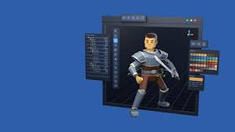

Bienvenido al mundo del desarrollo de videojuegos
Al Crear videojuegos no es solo programar. Es imaginar mundos, diseñar personajes, contar historias y construir experiencias únicas para cada jugador. Aquí descubrirás paso a paso cómo nace un videojuego, desde una idea hasta una obra jugable.

este sitio aprenderás los conceptos fundamentales que forman parte del proceso de creación de un videojuego moderno. Desde los motores gráficos más utilizados, hasta los lenguajes de programación y herramientas que dan vida a mundos virtuales llenos de imaginación.
¿Qué aprenderás aquí?
- Qué es el desarrollo de videojuegos y cómo funciona su proceso
- Cuáles son los motores gráficos más populares y para qué sirven
- Lenguajes y conceptos esenciales para programar videojuegos
- El rol del arte digital y la animación en la experiencia visual
- La importancia de la música y los efectos de sonido en la inmersión del jugador
No es necesario ser un experto para empezar. Lo importante es la curiosidad, las ganas de crear y la disposición para aprender paso a paso. gran desarrollador comenzó con una pequeña idea y el deseo de convertirla en realidad.
“Los videojuegos no solo se juegan, se viven. Cada línea de código y cada diseño construyen emociones y recuerdos.”
Explora las secciones del sitio para comenzar tu camino en este fascinante mundo. Haz clic en “Concepto” para iniciar tu aprendizaje.